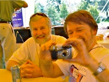
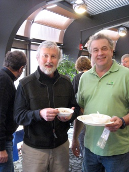
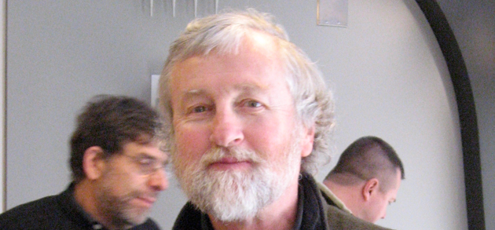

Jim Knox

On July 4, 2010, the University of Michigan lost a real, dedicated colleague and a true friend. Though he had officially retired along with the May 2010 Information and Technology Services (ITS) retirement class, Jim had been unable to attend the celebration event due to his illness, so many of us didn’t get the chance to say goodbye.

A thoroughly Michigan man, Jim held a bachelor’s degree from U-M’s School of Natural Resources, a master's degree from U-M's School of Public Health (MPH) and had studied in U-M's PhD program in Urban and Regional Planning.He also worked at the university for more than 30 years. When he retired, Jim was director of the university's Adaptive Technology Computing Site, where he provided adaptive and ergonomic computing hardware, software and workstations for students, faculty and staff with disabilities. He also served on the university's User Advocate team, which helps educates the U-M community about proper use of IT, protects users against abuse, and handles IT abuse complaints sent to the university. Though I don’t know for certain, I suspect that Jim had a foundational role in the development of both the ATCS and the User Advocate at the university.
He came to positively affect the lives of a good many people around the U.
In a very unsung and understated way, he was always working to help folks with disabilities be better able to use computing technology. That was a big passion for Jim. He also believed in computing overall and wanted to keep the computing environment safe and friendly for everyone so that all could benefit from the positive things it has to offer. He was one of the rocks of simple, positive practice on which the U-M computing community was built over the years.
One can’t really appreciate that kind of contribution enough until you travel to other campuses where you see a more convoluted, locked-down, dysfunctional computing environment. It makes all the difference in the world in your daily work, and our system was born from a caring philosophy about people and a dedication to work through the hard problems so users wouldn’t have to. Jim wasn’t the only one, but he was right there on the front lines, never giving up, always advocating for the user against unnecessary bureaucracy, restraints or obfuscation. And he gained a very positive reputation in the IT community for these efforts.

I got to work with Jim for the last seven years, and though we didn’t often have cause to work directly together on projects, just being in the office with him was enough to touch me more deeply than I realized. For me personally, his stoic attitude and dry sense of humor helped me get through many tough times at work. And that classic Land Rover of his and the stories of his travels gave me inspiration to get out there and breathe life in. Now when I look at old photos of him on his Ducati motorbike in the ‘60s, I see the same free-spirit Jim I knew here in the 00’s. Keep rockin’, Jim.

A man of Michigan